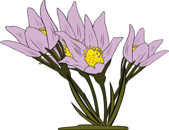

| نص الآية | الآية | السورة |
|---|---|---|
و كيف أصبحت
Barika Education Culture
:قال الله تعالى :أعوذ بالله من الشيطان الرجيم قَدْ جَاءَكُمْ بَصَائِرُ مِنْ رَبِّكُمْ فَمَنْ أَبْصَرَ فَلِنَفْسِهِ وَمَنْ عَمِيَ فَعَلَيْهَا َمَا أَنَا عَلَيْكُمْ بِحَفِيظٍ
الله أكبر
غص في أعماق المعجزة الخالدة كلام الله.
آيات و أقوال عن رسول الله صلى الله عليه وسلم
قال سبحانه وتعالى مزكيا الحبيب المصطفى – عليه الصلاة والسلام – :
( القلم 4 ) ” وإنك لعلى خلق عظيم ”
قال العالم الأمريكي مايكل هارث
" إن محمدًا صلى الله عليه وسلم كان الرجل الوحيد في التاريخ الذي نجح بشكل أسمى وأبرز في كلا المستويين الديني والدنيوي .. إن هذا الاتحاد الفريد الذي لا نظير له للتأثير الديني والدنيوي معًا يخوّله أن يعتبر أعظم شخصية ذات تأثير في تاريخ البشرية " .
قال الكاتب المسرحي البريطاني جورج برنارد شو
وهو من رفض أن يكون أداة لتشويه صورة الرسول "صلى الله عليه وسلم" عندما طلب منه البعض أن يمسرح حياة النبي حيث جاء رفضه قاطعاً. ومما قاله عن الإسلام ورسوله : "قرأت حياة رسول الإسلام جيداً، مرات ومرات لم أجد فيها إلا الخلق كما يجب أن يكون، وأصبحت أضع محمداً في مصاف بل على قمم المصاف من الرجال الذين يجب أن يتبعوا"
قال توماس كارليل
وهو المصلح الاجتماعي الإنجليزي الذي كان مولعاً بالشخصيات التي غيرت مجرى التاريخ، وأفرد في كتابه "الأبطال" فصلاً كاملاً للحديث عن الرسول الكريم "صلى الله عليه وسلم" واستعرض فيه نواحي العظمة في حياته ورد على افتراءات الكارهين له ولرسالته العظيمة حتى انه اتهم بالتحيز للإسلام
قال الأديب الروسي ليو تولستوي
" لا يوجد نبي حظي باحترام أعدائه سوى النبي محمد مما جعل الكثرة من الأعداء يدخلون الإسلام "

قالت الدكتورة زيجرد هونكة الألمانية
" أن محمد والإسلام شمس الله على الغرب. كان رسول الإسلام يعرف أن المرأة ستجد طريقها بجوار الرجل ذات يوم. لذا آثر أن تكون المرأة متدينة . لها لباس معين، حتى تقي نفسها شر النظرات وشر كشف العورات. ورجل بهذه العبقرية لا أستطيع أن أقول إلا أنه قدم للمجتمع أسمى آيات المثالية وأرفعها وكان جديرا أن تظل الإنسانية مدينة لهذا الرجل الذي غيَّر مجرى التاريخ برسالته العظيمة "
قال المفكر الفيلسوف لامارتن
النبي محمد علية الصلاة والسلام هو النبي الفيلسوف المحارب الخطيب المشرع قاهر الأهواء وبالنظر إلى كل مقاييس العظمة البشرية أود أن أتسائل هل هناك من هو أعظم من النبي محمد عليه الصلاة والسلام
قال المستشرق الكندي الدكتور زويمر الكندي
إن محمداً كان ولا شك من أعظم القواد المسلمين الدينيين، ويصدق عليه القول أيضاً بأنه كان مصلحاً قديراً وبليغاً فصيحاً وجريئاً مغواراً، ومفكراً عظيماً، ولا يجوز أن ننسب إليه ما ينافي هذه الصفات، وهذا قرآنه الذي جاء به وتاريخه يشهدان بصحة هذا الادعاء
قال برناردشو الإنكليزي
: الذي ولد في مدينة كانيا 1817 ـ 1902 له مؤلف أسماه (محمد)، وقد أحرقته السلطة البريطانية. إن العالم أحوج ما يكون إلى رجلٍ في تفكير محمد، هذا النبي الذي وضع دينه دائماً موضع الاحترام والإجلال فإنه أقوى دين على هضم جميع المدنيات، خالداً خلود الأبد، وإني أرى كثيراً من بني قومي قد دخلوا هذا الدين على بينة، وسيجد هذا الدين مجاله الفسيح في هذه القارة (يعني أوروبا).
قال المستشرق سنرستن الآسوجي
الذي ولد عام 1866، أستاذ اللغات الساميّة . " إننا لم ننصف محمداً إذا أنكرنا ما هو عليه من عظيم الصفات وحميد المزايا، فلقد خاض محمد معركة الحياة الصحيحة في وجه الجهل والهمجية، مصراً على مبدئه، وما زال يحارب الطغاة حتى انتهى به المطاف إلى النصر المبين، فأصبحت شريعته أكمل الشرائع، وهو فوق عظماء التاريخ "

قالت : آن بيزينت
في حياة وتعاليم محمد دار مادرس للنشر 1932. " من المستحيل لأي شخص يدرس حياة وشخصية نبي العرب العظيم ويعرف كيف عاش هذا النبي وكيف علم الناس، إلا أن يشعر بتبجيل هذا النبي الجليل، أحد رسل الله العظماء، ورغم أنني سوف أعرض فيما أروي لكم أشياء قد تكون مألوفة للعديد من الناس فإنني أشعر في كل مرة أعيد فيها قراءة هذه الأشياء بإعجاب وتبجيل متجددين لهذا المعلم العربي العظيم. هل تقصد أن تخبرني أن رجلاً في عنفوان شبابه لم يتعد الرابعة والعشرين من عمره بعد أن تزوج من امرأة أكبر منه بكثير وظل وفياً لها طيلة 26 عاماً ثم عندما بلغ الخمسين من عمره - السن التي تخبو فيها شهوات الجسد - تزوج لإشباع رغباته وشهواته؟! ليس هكذا يكون الحكم على حياة الأشخاص. فلو نظرت إلى النساء اللاتي تزوجهن لوجدت أن كل زيجة من هذه الزيجات كانت سبباً إما في الدخول في تحالف لصالح أتباعه ودينه أو الحصول على شيء يعود بالنفع على أصحابه أو كانت المرأة التي تزوجها في حاجة ماسة للحماية "
قال مايكل هارت
في كتابه مائة رجل من التاريخ. إن اختياري محمداً، ليكون الأول في أهم وأعظم رجال التاريخ، قد يدهش القراء، ولكنه الرجل الوحيد في التاريخ كله الذي نجح أعلى نجاح على المستويين: الديني والدنيوي. فهناك رُسل وأنبياء وحكماء بدءوا رسالات عظيمة، ولكنهم ماتوا دون إتمامها، كالمسيح في المسيحية، أو شاركهم فيها غيرهم، أو سبقهم إليهم سواهم، كموسى في اليهودية، ولكن محمداً هو الوحيد الذي أتم رسالته الدينية، وتحددت أحكامها، وآمنت بها شعوب بأسرها في حياته. ولأنه أقام جانب الدين دولة جديدة، فإنه في هذا المجال الدنيوي أيضاً، وحّد القبائل في شعـب، والشعوب في أمة، ووضع لها كل أسس حياتها، ورسم أمور دنياها، ووضعها في موضع الانطلاق إلى العالم. أيضاً في حياته، فهو الذي بدأ الرسالة الدينية والدنيوية، وأتمها
قال القس لوزان
بعد بيان عن أوصاف محمد صلى الله عليه وآله وسلم: " ف محمد صلى الله عليه وآله وسلم بلا التباس ولا نكران من النبيين والصديقين، بل وإنه نبي عظيم جليل القدر والشأن، لقد أمكنه بإرادة الله سبحانه تكوين الملة الإسلامية وإخراجها من العدم إلى الوجود، بما صار أهلها ينيفون (يزيدون) عن الثلاثمائة مليون (يعني على ظنه في زمانه) من النفوس، وراموا بجدهم سلطنة الرومان، وقطعوا برماحهم دابر أهل الضلالة إلى أن صارت ترتعد من ذكرهم فرائض الشرق والغرب "
قال كارل ماركس
"هذا النبي افتتح برسالته عصرا للعلم والنور والمعرفة ، حري أن تدون أقواله وأفعاله بطريقة علمية خاصة ، وبما أن هذه التعاليم التي قام بها هي وحي فقد كان عليه أن يمحو ما كان متراكما من الرسالات السابقة من التبديل والتحوير "
قال فارس الخوري
" إن محمدا أعظم عظماء العالم ، والدين الذي جاء به أكمل الأديان "
قال الفيلسوف الفرنسي (كارديفو)
"إن محمداً كان هو النبي الملهم والمؤمن، ولم يستطع أحد أن ينازعه المكانة العالية التي كان عليها ، إن شعور المساواة والإخاء الذي أسسه محمد بين أعضاء الكتلة الإسلامية كان يطبق عمليا حتى على النبي نفسه"
قال العالم الهندوسي ت.ل.فسواني
بعنوان "إجلال فسواني لمحمد": ( تأملت في أمر محمد صلى الله عليه وسلم فتعجبت من هذا الرجل العظيم الذب نشأ بين أولئك القوم ، المختلى النظام ، الفاسدي الأخلاق ، العابدي الأحجار ، هذا الرجل محمد وقف تقريبا وحده ، شجاعا متحديا غير هياب ، ولا وجل في وجه التوعد بالقتل فمن الذي أعطاه تلك القوة التي قام بها كأنه بطل من أبطال الحرب حتى استمعوا له بعد الإعراض لكلامه ؟ فمن أين جاء سحر بيانه حتى أعتق العبيد وساوى بين النبلاء وبين الصعاليك المنبوذين ، حتى صاروا إخوانا وخلانا ؟. ونحن هنا في الهند إلى الآن لا نزال نقتتل لأجل جواز لمس بعضنا بعضا أو عدمه ، لا نزال عاجزين عن إباحة الدخول في بيوت الآلهة _الأصنام والأوثان_ للمنبوذين من أبناء جلدتنا . من أين استمد الرجل محمد صلى الله عليه وسلم قوة حياته الغالية ؟ والهند إلى الآن مصابة بمصيبة شرب الخمر ، والرجل محمد اقترح كما تقول الكتب القديمة (يشير إلى القرآن) مقاطعة الخمر ومقاطعة كل شرب مسكر ، فقام أصحابه وألقوا دنان الخمور في أزقة المدينة وحطموها تحطيما ، ولقد كان تصرف محمد في قومه كالتنويم المغناطيسي ، فمن أين جاء سر هذه القوة؟ ألم تر أن قومه كانوا أشتاتا قد عمتهم الفوضى فألف بين قلوبهم وجعلهم أمة واحدة ، وكانوا في التوحش فأنقذهم ورفع مقامهم ، وجعلهم عظماء أقوياء في أعين الأمم كلها ، وأصبحت آخذة بيمينها مصباح التهذيب والرقى ، إن التهذيب العربي هو الذي أنشأ في آسيا و أوروبا نشأة جديدة وإنسانية جديدة). وفى الختام قال فسواني : (إليك يا محمد أنا الخادم الحقير ، أقدم إجلالي وتعظيمي بكل خضوع وتكريم ، إليك أطأطىء رأسي فإنك لنبي حق من عند الله ، و قوتك العظيمة كانت من عالم الأزلي الأبدي).
-المقال من - intelligentsia.tn.over-blog.com
أجمل أقوال وحكم عن القرآن الكريم
قال رسول الله سيدنا محمد صلى الله عليه و سلم
«اقرأوا القرآن فإنه يأتي يوم القيامة شفيعا لأصحابه».
قال رسول الله سيدنا محمد صلى الله عليه و سلم
«خير من تعلم القرآن وعلمه»
قال رسول الله سيدنا محمد صلى الله عليه و سلم
«الصيام والقرآن يشفعان للعبد يوم القيامة. يقول الصيام: أي رب، منعته الطعام والشهوات بالنهار فشفعني فيه، ويقول القرآن: منعته النوم بالليل فشفعني فيه. فقال: فيشفعان».
ابن القيم
اذا أردت أن تعلم ما عندك وعند غيرك من محبة الله فانظر محبة القرآن من قلبك
غوته
كلما قرأت القرآن شعرت أن روحي تهتز داخل جسمي
علي الطنطاوي
إن مثل القرآن والعلم كمثل سائق سيارة يمشي بها في السهل الواسع يرى القمر أمامه مُطلًّا عليه من فوق الجبل فيسرع ليدرك القمر والقمر مكانه
الحسن البصري
تفـقـَّـد الحلاوة في ثلاثة أشياء : في الصلاة والقرآن والذكر ، فإن وجدت ذلك فأمضي وأبشر ، وإلا فاعلم أن بابك مغلق فعالج فتحه
احمد الشقيري
القرآن : هوَ جنّة ، هوَ رِفعة ، هوَ هِدآية ، هوَ سبيل إسعآد وَ دربُ أمآن
مصطفى محمود
ومن دلائل عظمة القرآن و إعجازه أنه حينما ذكر الزواج، لم يذكر الحب و إنما ذكر المودة و الرحمة و السكن … سكن النفوس بعضها إلى بعض و راحة النفوس بعضها إلى بعض (( وَمِنْ آيَاتِهِ أَنْ خَلَقَ لَكُم مِّنْ أَنفُسِكُمْ أَزْوَاجًا لِّتَسْكُنُوا إِلَيْهَا وَجَعَلَ بَيْنَكُم مَّوَدَّةً وَرَحْمَةً )) ( الروم – 21 ) إنها الرحمة و المودة.. مفتاح البيوت و الرحمة تحتوي على الحب بالضرورة.. و الحب لا يشتمل على الرحمة، بل يكاد بالشهوة أن ينقلب عدوانا و الرحمة أعمق من الحب و أصفى و أطهر. و الرحمة عاطفة إنسانية راقية مركبة، ففيها الحب، و فيها التضحية، و فيها إنكار الذات، و فيها التسامح، و فيها العطف، و فيها العفو، و فيها الكرم. و كلنا قادرون على الحب بحكم الجبلة البشرية. و قليل منا هم القادرون على الرحمة و بين ألف حبيبة هناك واحدة يمكن أن ترحم، و الباقي طالبات هوى و نشوة و لذة. اللهم إني أسألك رحمة.. اللهم إني أسألك مودة تدوم.. اللهم إني أسألك سكنا عطوفا و قلبا طيبا.. اللهم لا رحمة إلا بك و منك و إليك
أحمد الشقيري
كلما قرأت كلمة الجهاد في القرآن فلا يذهب بالك فقط لجهاد الحرب فجهاد النفس أكبر واعظم وهو داخل في معنى آيات الجهاد في سبيل الله فجهاد النفس جهاد في سبيل الله وإياك العناد فإنه مهلك
مهاتير محمد
القانون لا يمكن اعتباره إسلامياً لمجرد أننا صغناه على أنه قانون شرعي، بل على العكس من ذلك يمكننا أن نضيف قوانين أخرى تبدو في ظاهرها غير شرعية، لكننا نصفها على أنها شرعية متى كانت لا تخالف أو تناقض روح ومبادئ القوانين والحدود التي ورد ذكرها صراحة في القرآن الكريم
محمد الغزالي
والزكاة المفروضة ليست ضريبة تؤخذ من الجيوب بل هى أولا غرس لمشاعر الحنان والرأفة وتوطيد لعلاقات التعارف والألفة بين شتى الطبقات. وقد نص القرآن على الغاية من إخراج الزكاة بقوله: خذ من أموالهم صدقة تطهرهم وتزكيهم بها. فتنظيف النفس من أدران النقص والتسامى بالمجتمع إلى مستوى أنبل هو الحكمة الأولى
عمر المقبل
إن من يقصر علاقته بالقرآن تلاوة و تدبراً على شهر رمضان ، فهو كمن يعلن عن استغنائه عن هدى الله ، و نوره ، و رحمته ،و شفائه ، و حياة قلبه أحد عشر شهراً
الحسن البصري
قرأت في تسعين موضعا من القرآن أن الله قدر الأرزاق و ضمنها لخلقه ، و قرأت في موضع واحد : الشيطان يعدكم الفقر … فشككنا في قول الصادق في تسعين موضعاً و صدقنا قول الكاذب في موضع واحد
الليث بن سعد
ما الرحمة إلى أحد بأسرع منها إلى مستمع القرآن ؛ لقول الله عز وجل : (( و إذا قرئ القرآن فاستمعوا له و أنصتوا لعلكم ترحمون)) ، و (لعل) من الله واجبة
سيد قطب
القرآن لا يدركه حق ادراكه من يعيش خالي البال من مكابدة الجهد و الجهاد لاستئناف حياة اسلامية حقيقية
محمد متولي الشعراوي
من حلاوة ما ذقته فى القرآن .. أريد أن أنقل هذه الحلاوة للناس
ويل ديورانت
لقد شكل القرآن أخلاق المسلمين ، و حضهم على الاعتدال لدرجة لا يوجد لها نظير في أي بقعة يسكنها الرجل الأبيض … و علمهم مواجهة الحياة دون شكوى أو دموع
محمد حسن الوزاني
الإسلام دين الشورى، والاستبداد مخالف للشريعة الإسلامية وللدستورها الذي هو القرآن الكريم
إبراهيم السكران
انبعاث صوت القارئ بالقرآن بين أمواج الليل الساكن قصة تنحني لها النفوس.
إبراهيم السكران
القرآن اذا خيم سكون الليل يكون عالماّ آخر
إبراهيم السكران
إنه الخيط الناظم والحقيقة الكبرى في القرآن وهو استمرار حركة القلب بالإيمان بالله والتعلق به سبحانه
ابن تيمية
من تدبر القرآن طالبا الهدى منه ؛ تبين له طريق الحق
أحمد إبراهيم أبو غالي
من أراد أن يحدثه الله فليقرأ القرآن
أحمد شوقي إبراهيم
الحقائق الكونية دليل على أن الذي خلق الحقائق هو الذي أنزل القرآن
أحمد صبري غباشي
لا شيء يوطّد علاقتي باللغة مثل قراءة القرآن !
تركي الدخيل
ما أكده القرآن لم يطبقه المسلمون والعرب بحذافيره ،لهذا لاتزال المرأة تُظلم وتُضطهد
محمد الغزالي
والزكاة المفروضة ليست ضريبة تؤخذ من الجيوب بل هى أولا غرس لمشاعر الحنان والرأفة وتوطيد لعلاقات التعارف والألفة بين شتى الطبقات. وقد نص القرآن على الغاية من إخراج الزكاة بقوله: خذ من أموالهم صدقة تطهرهم وتزكيهم بها. فتنظيف النفس من أدران النقص والتسامى بالمجتمع إلى مستوى أنبل هو الحكمة الأولى. ومن أجل ذلك وسع النبى صلى الله عليه وسلم فى دلالة كلمة الصدقة التى ينبغى أن يبذلها المسلم فقال: تبسمك فى وجه أخيك صدقة وأمرك بالمعروف ونهيك عن المنكر صدقة وإرشادك الرجل فى أرض الضلال لك صدقة وإماطتك الأذى والشوك والعظم عن الطريق لك صدقة وإفراغك من دلوك فى دلو أخيك لك صدقة وبصرك للرجل الردىء البصر لك صدقة . وهذه التعاليم فى البيئة الصحراوية التى عاشت دهورا على التخاصم والنزق تشير إلى الأهداف التى رسمها الإسلام وقاد العرب فى الجاهلية المظلمة إليها.
-بتصرف-هذه الاحاديث و الاقوال من هذا الموقعvb.3dlat.com/
| نص الآية | الآية | السورة |
|---|---|---|
صورة مركبة بواسطة
بريكة للتربية و الثقافة
Barika Education Culture
أقوال و أشعار عن الاخلاق
قال الامام علي -كرم الله وجهه ورضي عنه
صُنِ النَفسَ وَاِحمِلها عَلى ما يزيِنُها * تَعِش سالِما وَالقَولُ فيكَ جَميلُ
وَلا تُرِينَّ الناسَ إِلّا تَجَمُّلا * نَبا بِكَ دَهرٌ أَو جَفاكَ خَليلُ
وَإِن ضاقَ رِزقُ اليَومِ فَاِصبِر إِلى غَد * عَسى نَكَباتِ الدَهرِ عَنكَ تَزولُ
يَعِزُّ غَنِيُّ النَفسِ إِن قَلَّ مالُهُ * ويَغنى غَنِيُّ المالِ وَهوَ ذَليلُ
وَلا خَيرَ في وِدِّ اِمرِئٍ مُتَلَّون * إِذا الريحُ مالَت مالَ حَيثُ تَميلُ
جَوادٌ إِذا اِستَغنَيتَ عَن أَخذِ مالِهِ * وَعِندَ اِحتِمالِ الفَقرِ عَنكَ بَخيلُ
فَما أَكثَرَ الإِخوان حينَ تَعدّهُم * وَلَكِنَهُم في النائِباتِ قَليلُ
قال أمير الشعراء أحمد شوقي
وإنما الأمم الأخلاق ما بقيت * فإن هم ذهبت أخلاقهم ذهبوا
وقال أيضا
وإذا أصيب القوم في أخلاقهم * فأقم عليهم مأتما وعويلا
وقال أيضا
صلاح أمرك للأخلاق مرجعه * فقوّم النفس بالأخلاق تستقم
قال المتنبي
وما الحسن في وجه الفتى شرفا له * إذا لم يكن في فعله والخلائق
قال معروف الرصافي
هي الاخلاقُ تنبتُ كالنبات * إذا سقيت بماء المكرمات
تقوم إذا تعهدها المُربي * على ساق الفضيلة مُثمِرات
وتسمو للمكارم باتساق * كما اتسقت أنابيبُ القناة
وتنعش من صميم المجد رُوحا * بأزهارٍ لها متضوعات
ولم أر للخلائق من محلّ * يُهذِّبها كحِضن الأمهات
فحضن الأم مدرسة تسامت * بتربية البنين أو البنات
وأخلاقُ الوليد تقاس حسنا * بأخلاق النساءِ الوالدات
وليس ربيب عالية المزايا * كمثل ربيب سافلة الصفات
وليس النبت ينبت في جنان * كمثل النبت ينبت في الفَلاة
قال محمود الأيوبي
والمرء بالأخلاق يسمو ذكره * وبها يُفضل في الورى ويُوقر
قال أبو تمام
فلم أجد الأخلاق إلا تخلقا * ولم أجد الأفضال إلا تفضلا
قال مسعود سماحة
جمال الخلق أفضل من جمال * يغطي قبح خلق في مليح
فكم من سوء خلق في جميل * وكم من حسن نفس في قبيح
قال شاعر النيل حافظ إبراهيم
فَإِذا رُزِقتَ خَليقَةً مَحمودَةً * فَقَدِ اِصطَفاكَ مُقَسِّمُ الأَرزاقِ
فَالناسُ هَذا حَظُّهُ مالٌ وَذا * عِلمٌ وَذاكَ مَكارِمُ الأَخلاقِ
وَالمالُ إِن لَم تَدَّخِرهُ مُحَصَّنا * بِالعِلمِ كانَ نِهايَةَ الإِملاقِ
وَالعِلمُ إِن لَم تَكتَنِفهُ شَمائِلٌ * تُعليهِ كانَ مَطِيَّةَ الإِخفاقِ
لا تَحسَبَنَّ العِلمَ يَنفَعُ وَحدَهُ * ما لَم يُتَوَّج رَبُّهُ بِخَلاقِ
كَم عالِمٍ مَدَّ العُلومَ حَبائِلاً * لِوَقيعَةٍ وَقَطيعَةٍ وَفِراقِ
وَفَقيهِ قَومٍ ظَلَّ يَرصُدُ فِقهَهُ * لِمَكيدَةٍ أَو مُستَحَلِّ طَلاقِ
يَمشي وَقَد نُصِبَت عَلَيهِ عِمامَةٌ * كَالبُرجِ لَكِن فَوقَ تَلِّ نِفاقِ
يَدعونَهُ عِندَ الشِقاقِ وَما دَرَوا * أَنَّ الَّذي يَدعونَ خِدنُ شِقاقِ
وَطَبيبِ قَومٍ قَد أَحَلَّ لِطِبِّهِ * ما لا تُحِلُّ شَريعَةُ الخَلّاقِ
قَتَلَ الأَجِنَّةَ في البُطونِ وَتارَةً * جَمَعَ الدَوانِقَ مِن دَمٍ مُهراقِ
وَأَديبِ قَومٍ تَستَحِقُّ يَمينُهُ * قَطعَ الأَنامِلِ أَو لَظى الإِحراقِ
يَلهو وَيَلعَبُ بِالعُقولِ بَيانُهُ * فَكَأَنَّهُ في السِحرِ رُقيَةُ راقي
في كَفِّهِ قَلَمٌ يَمُجُّ لُعابُهُ * سُمّاً وَيَنفِثُهُ عَلى الأَوراقِ
لَو كانَ ذا خُلُقٍ لَأَسعَدَ قَومَهُ * بِبَيانِهِ وَيَراعِهِ السَبّاقِ
مَن لي بِتَربِيَةِ النِساءِ فَإِنَّها * في الشَرقِ عِلَّةُ ذَلِكَ الإِخفاقِ
الأُمُّ مَدرَسَةٌ إِذا أَعدَدتَها * أَعدَدتَ شَعباً طَيِّبَ الأَعراق
قال أبو الأسود الدؤلي
لا تَنهَ عَن خُلُقٍ وَتَأتيَ مِثلَهُ * عارٌ عَلَيكَ إِذا فَعَلتَ عَظيمُ
ابدأ بِنَفسِكَ وَانَها عَن غِيّها * فَإِذا انتَهَت عَنهُ فَأَنتَ حَكيمُ
فَهُناكَ يُقبَل ما وَعَظتَ وَيُقتَدى * بِالعِلمِ مِنكَ وَيَنفَعُ التَعليمُ
قال صفي الدين الحلي
إنّا لَقَوْمٌ أبَتْ أخلاقُنا شَرفا * أن نبتَدي بالأذى من ليسَ يوذينا
بِيضٌ صَنائِعُنا ، سودٌ وقائِعُنا * خِضرٌ مَرابعُنا ، حُمرٌ مَواضِينا
قال السموأل
إِذا المَرءُ لَم يُدنَس مِنَ اللُؤمِ عِرضُهُ * فَكُلُّ رِداءٍ يَرتَديهِ جَميلُ
وَإِن هُوَ لَم يَحمِل عَلى النَفسِ ضَيمَها * فَلَيسَ إِلى حُسنِ الثَناءِ سَبيلُ
الإمام الشافعي
الناس بالناس مادام الحياء بهم * والسعد لاشك تارات وهبات
وأفضل الناس مابين الورى رجل * تقضى علي يده للناس حاجات
لاتمنعن يد المعروف عن أحد * مادمت مقتدرا فالسعد تارات
واشكر فضائل صنع الله إذ جعلت * إليك لا لك عند الناس حاجات
قد مات قوم وما ماتت مكارمهم * وعاش قوم وهم في الناس أموات
وقال أيضا
إذا رمتَ أن تحيا سليما منَ الرَّدى * وَدِيُنكَ مَوفُورٌ وَعِرْضُكَ صَيِّنُ
فَلاَ يَنْطقنْ مِنْكَ اللسَانُ بِسوأة * فَكلُّكَ سَوءاتٌ وَلِلنَّاسِ أعْينُ
وَعَاشِرْ بمَعْرُوفٍ ، وَسَامِحْ مَنِ اعتَدَى * ودافعُ ولكن بالتي هي أحسنُ
قالت عائشة التيمورية
ما الحظ إلا امتلاك المرء عفته * وما السعادة إلا حسن أخلاق
الكعبة المشرفة
اللهم يسر لنا زيارتها آمين
عن الشافعي قال طلب العلم أفضل من صلاة النافلة
لا حسب كالتواضع ، و لا شرف كالعلم
ثلاثة أمور تزيد المرأة إجلالاً : الأدب ، والعلم ، والخلق الحسن
إن الدين ليس بديلاً من العلم والحضارة. ولا عدواً للعلم والحضارة. إنما هو إطار للعلم والحضارة، ومحور للعلم والحضارة، ومنهج للعلم والحضارة في حدود إطاره ومحوره الذي يحكم كل شئون الحياة
لا تمنحني السمك وإنما علمني كيف أصطاد
كل إناء يضيق بما جعل فيه إلا وعاء العلم فإنه يتسع
لا يزال المرء عالماَ ما دام في طلب العلم ، فإذا ظن أنه قد علم فقد بدأ جهله
إذا رأيت العلماء على أبواب الملوك فقل بئس الملوك و بئس العلماء ، و إذا رأيت الملوك على أبواب العلماء فقل نعم الملوك و نعم العلماء
العلم هو التطور السامي للمعارف العامة
نصف العلم أخطر من الجهل
رأسمالك علمك ، و عدوك جهلك
لا يمكن للمرء أن يحصل على المعرفة إلا بعد أن يتعلم كيف يفكر
العلم هو الطريق للحياة السعيدة الفاضلة
العلم هو المعرفة المنظمة والحكمة هي الحياة المنظمة
كلما ازدت علما أشعر أنني ازدت جهلاً، فالعالم كلما تعمق يشعر بالحقيقة العميقة للوجود وأن كل علومه ليست أكثر من نقطة في بحره
ما ناقشني عالم إلا غلبته ، وما ناقشني جاهل إلا غلبني
العلم يجعلنا نعبر عما في أنفسنا بطريقة سامية ويهذب نفوسنا وينير أعماقنا فنشفى من أمراضنا وهو طريق الهامنا
من أراد الدنيا فعليه بالعلم، ومن أراد الأخرة فعليه بالعلم
سعادتنا تعتمد على ما في عقولنا من علم وعلى ما أنجزناه من أعمال لاعلى ما في جيوبنا من مال
العلم يجعلنا نعبر عما في أنفسنا بطريقة سامية ويهذب نفوسنا وينير أعماقنا فنشفى من أمراضنا وهو طريق الهامنا
أطلبوا العلم من المهد إلى اللحد
حُسْنُ طلب الحاجة نصف العلم
ليس بعد الفرائض أفضل من طلب العلم
حُسْنُ طلب الحاجة نصف العلم
إذا تم العقل نقص الكلام
تعلموا العلم فإن تعلمه لله خشية، وطلبه عباده ،ومذاكرته تسبيح،والبحث عنه جهاد ،وتعليمه من لا يعلمه صدقة،وبذله لأهله قربة
كلما ازدت علما أشعر أنني ازدت جهلاً، فالعالم كلما تعمق يشعر بالحقيقة العميقة للوجود وأن كل علومه ليست أكثر من نقطة في بحره
ما ناقشني عالم إلا غلبته ، وما ناقشني جاهل إلا غلبني
العلم يجعلنا نعبر عما في أنفسنا بطريقة سامية ويهذب نفوسنا وينير أعماقنا فنشفى من أمراضنا وهو طريق الهامنا
العلم مروءة من لا مروءة له
من أراد الدنيا فعليه بالعلم، ومن أراد الأخرة فعليه بالعلم
سعادتنا تعتمد على ما في عقولنا من علم وعلى ما أنجزناه من أعمال لاعلى ما في جيوبنا من مال
العلم يجعلنا نعبر عما في أنفسنا بطريقة سامية ويهذب نفوسنا وينير أعماقنا فنشفى من أمراضنا وهو طريق الهامنا
أطلبوا العلم من المهد إلى اللحد
حُسْنُ طلب الحاجة نصف العلم
ليس بعد الفرائض أفضل من طلب العلم
حُسْنُ طلب الحاجة نصف العلم
إذا تم العقل نقص الكلام
تعلموا العلم فإن تعلمه لله خشية، وطلبه عباده ،ومذاكرته تسبيح،والبحث عنه جهاد ،وتعليمه من لا يعلمه صدقة،وبذله لأهله قربة
العلم من دون ضمير هلاك للروح
سعيد من يعرف أسباب الأشياء
إن الإتجاه الذي يبدأ مع التعلم سوف يكون من شأنه أن يحدد حياه المرء في المستقبل
العلم لا وطن له، أما الفن فله وطن، وكل وطن له فن
ما من تقدم علمي كبير إلا وناتج عن جرأة جديدة للخيال
العلم تَوَصَّلَ لعلاج معظم الشرور، ولكنه فشل في علاج أسوأ هذه الشرور؛ ألا وهو اللامبالاة تجاه النفس البشرية
الحقائق ليست علوم ولا المعجم نوع من الأدب!
ليس اليتيم من مات والده ... إن اليتيم يتيم العلم والأدب
حُسْنُ طلب الحاجة نصف العلم
ليس بعد الفرائض أفضل من طلب العلم
العلم شيءٌ رائعٌ إذا لم تكن تعتاش منه
فقلْ لمنْ يدَّعِي في العلمِ فلسفةً ... حَفِظْتَ شَيئاً، وغابَتْ عنك أشياءُ
أدعية من القران والسنة
َا إِلَهَ إِلا أَنْتَ سُبْحَانَكَ إِنِّي كُنْتُ مِنَ الظَّالِمِينَ
رَبَّنَا ظَلَمْنَا أَنْفُسَنَا وَإِنْ لَمْ تَغْفِرْ لَنَا وَتَرْحَمْنَا لَنَكُونَنَّ مِنَ الْخَاسِرِينَ
رَبَّنَا عَلَيْكَ تَوَكَّلْنَا وَإِلَيْكَ أَنَبْنَا وَإِلَيْكَ الْمَصِيرُ
َبَّنَا لَا تَجْعَلْنَا فِتْنَةً لِلَّذِينَ كَفَرُوا وَاغْفِرْ لَنَا رَبَّنَا إِنَّكَ أَنْتَ الْعَزِيزُ الْحَكِيمُ
رَبَّنَا آمَنَّا بِمَا أَنْزَلْتَ وَاتَّبَعْنَا الرَّسُولَ فَاكْتُبْنَا مَعَ الشَّاهِدِينَ
رَبَّنَا لَا تَجْعَلْنَا فِتْنَةً لِلْقَوْمِ الظَّالِمِينَ * وَنَجِّنَا بِرَحْمَتِكَ مِنَ الْقَوْمِ الْكَافِرِينَ
رَبَّنَا اصْرِفْ عَنَّا عَذَابَ جَهَنَّمَ إِنَّ عَذَابَهَا كَانَ غَرَامًا * إِنَّهَا سَاءَتْ مُسْتَقَرًّا وَمُقَامًا
رَبَّنَا اغْفِرْ لَنَا وَلِإِخْوَانِنَا الَّذِينَ سَبَقُونَا بِالْإِيمَانِ وَلَا تَجْعَلْ فِي قُلُوبِنَا غِلًّا لِلَّذِينَ آمَنُوا رَبَّنَا إِنَّكَ رَءُوفٌ رَحِيمٌ
رَبَّنَا آتِنَا فِي الدُّنْيَا حَسَنَةً وَفِي الْآخِرَةِ حَسَنَةً وَقِنَا عَذَابَ النَّارِ
رَبَّنَا مَا خَلَقْتَ هَذَا بَاطِلًا سُبْحَانَكَ فَقِنَا عَذَابَ النَّارِ * رَبَّنَا إِنَّكَ مَنْ تُدْخِلِ النَّارَ فَقَدْ أَخْزَيْتَهُ وَمَا لِلظَّالِمِينَ مِنْ أَنْصَارٍ * رَبَّنَا إِنَّنَا سَمِعْنَا مُنَادِيًا يُنَادِي لِلْإِيمَانِ أَنْ آمِنُوا بِرَبِّكُمْ فَآمَنَّا رَبَّنَا فَاغْفِرْ لَنَا ذُنُوبَنَا وَكَفِّرْ عَنَّا سَيِّئَاتِنَا وَتَوَفَّنَا مَعَ الْأَبْرَارِ * رَبَّنَا وَآتِنَا مَا وَعَدْتَنَا عَلَى رُسُلِكَ وَلَا تُخْزِنَا يَوْمَ الْقِيَامَةِ إِنَّكَ لَا تُخْلِفُ الْمِيعَادَ
-الاقوال و الادعية من - mawdoo3.com